| 日付 | 2022年5月1日（日） - 2022年5月4日（水） | ||||
|---|---|---|---|---|---|
| 山域 | 中国の山 | ||||
| メンバー | 家族（妻、長女・11歳、長男・8歳） | ||||
| 山行形態 | 子連れ3泊4日キャンプ | ||||
| アクセス | 車、タクシー | ||||
| ルート (Map2) |
|
3日目
5時半起床。本日も朝は快晴。
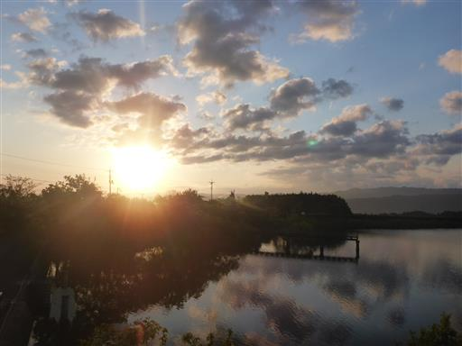
山に行くことに、家族からの文句は色々と多かったが、
昨日の登山は消化不良だったため、本日も山に行くことにする。
目的地は蒜山。広大な駐車場に車を停める。標高540m。
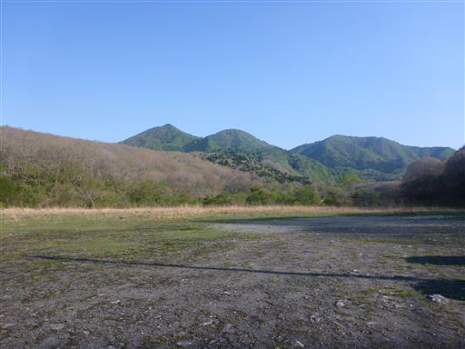
登山口までの道は歩いていて気持ちが良い。
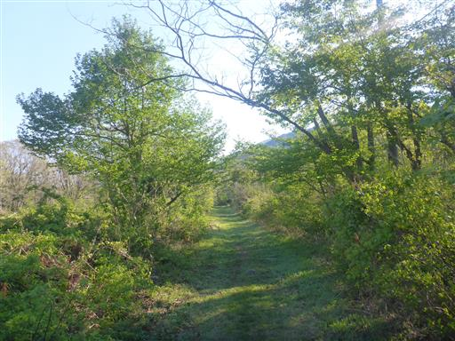
牧場跡だろうか？
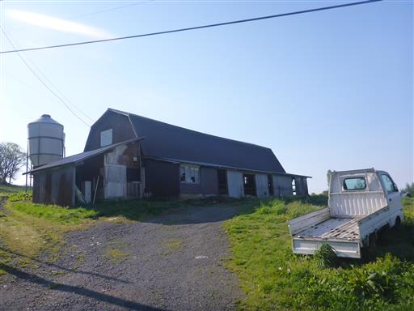
フモトスミレの花が咲いている。
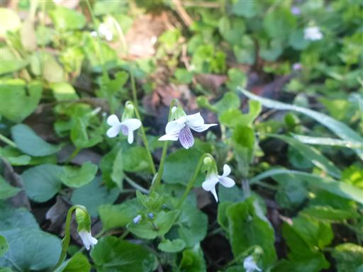
登山口に到着。バリケードのようなものがあるが、牛除けだろうか？
登山道の矢印があるので、道は間違いなさそうだ。
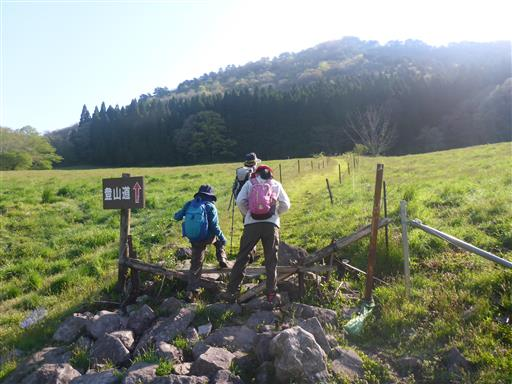
少し高台からは素晴らしい展望が広がる。
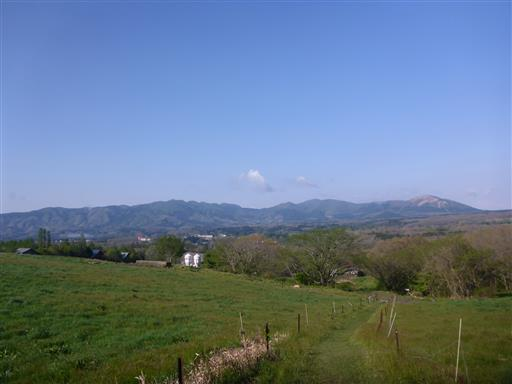
意外にも最初は植林地帯の中を歩く。
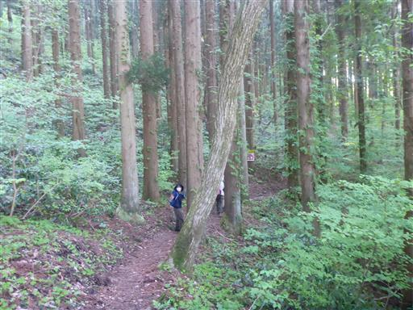
周囲はすぐに自然林になる。
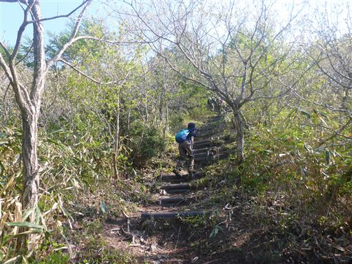
周囲の木は背が低く、展望が広がってくる。
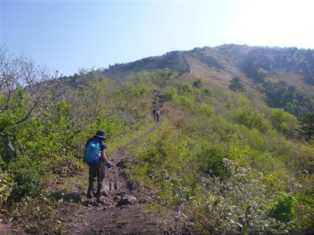
下界は田園風景。その背後には目立たない山々が広がっている。
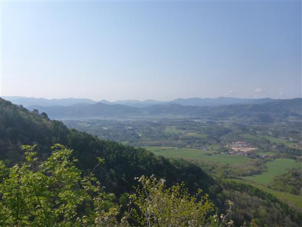
足元に咲くイワカガミ。
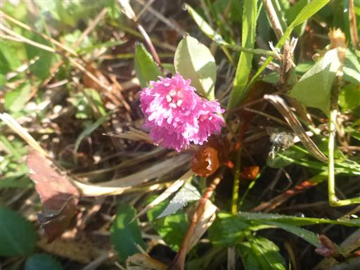
新緑が非常に美しい。まさに今が見頃だ。
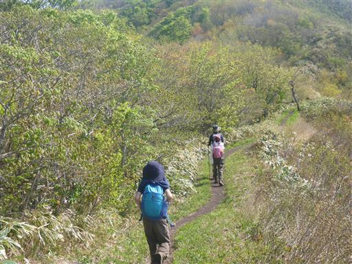
眼下の新緑もまた美しい。
素晴らしい快晴で、周囲の景色と新緑を楽しみながら歩いていく。
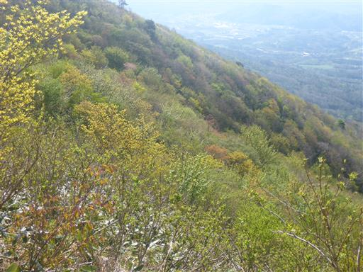
歩いてきた道を振り返る。
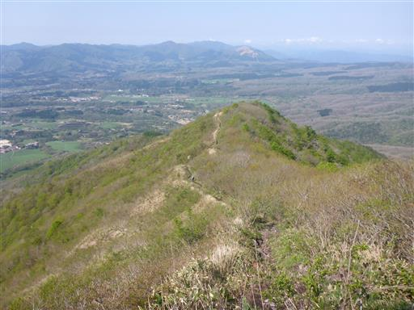
八合目に到着。
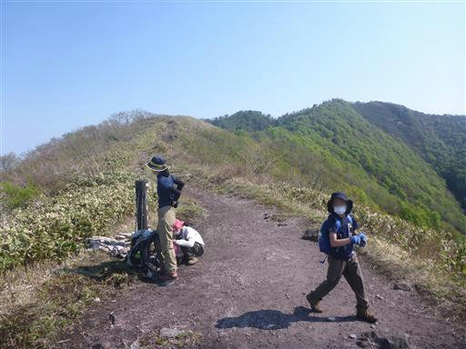
伯耆大山の姿がきれいに見える。
昨日と打って変わって本日は見事な快晴だ。
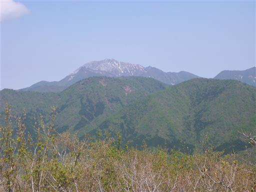
これから向かう中蒜山、その左奥に下蒜山が見える。
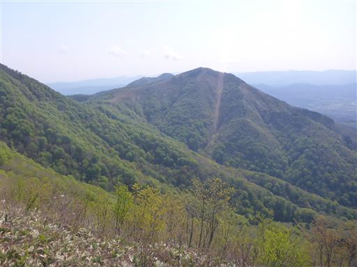
上蒜山山頂までは、あとわずかの距離。展望の良い尾根道を登って行く。
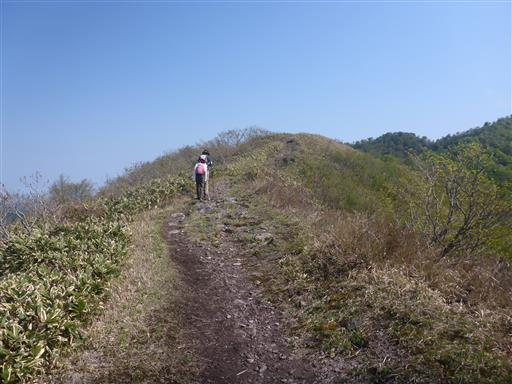
足元には所々でカタクリの花がみられる。
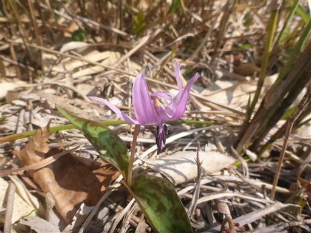
上蒜山山頂に到着。標高1202m。
登山道からの展望はよかったのに、山頂からはあまり展望が広がらない。
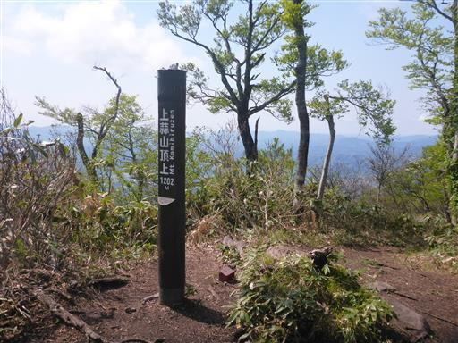
近くに三角点峰があるため、一人で往復する。
ちょっと笹薮の道だ。
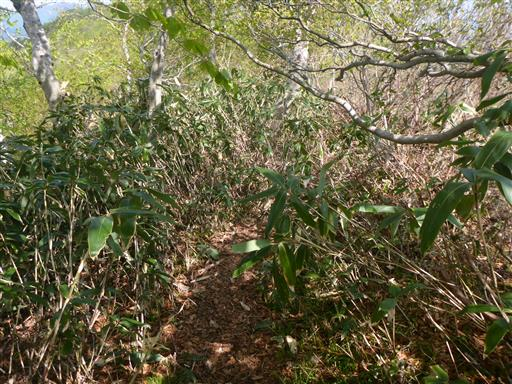
あっという間に三角点峰に到着。
こちらの方が標高は低い。展望も全くなく、あまり来る意味はないピークだ。
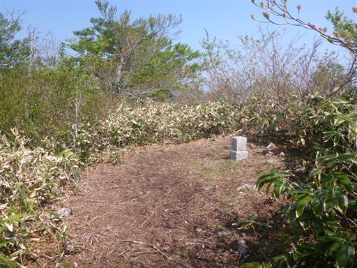
上蒜山に戻ったら、中蒜山に向かって歩き出す。
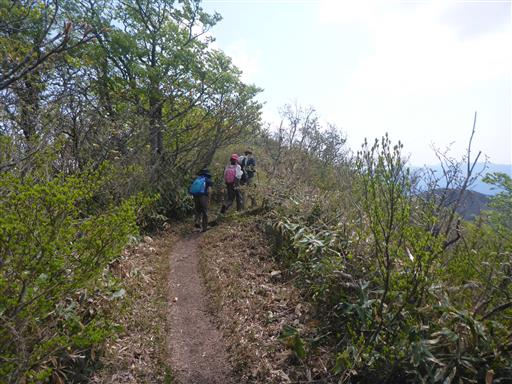
斜面の新緑が美しい。

中蒜山に向かって下る道は思いの外、急斜面。
鎖が設置された道が続く。
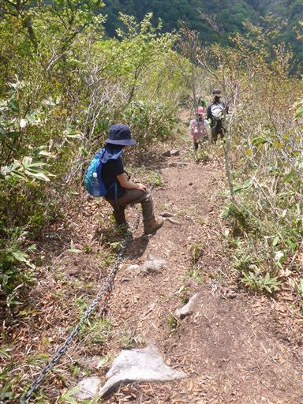
鞍部から見上げる中蒜山。
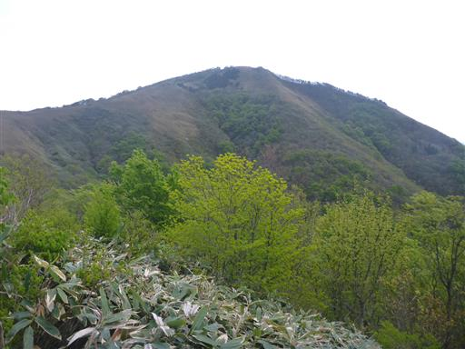
この辺りはカタクリの群落が見られる。
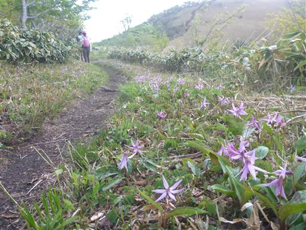
キスミレの花も見られる。ダイセンキスミレという固有種だろうか？
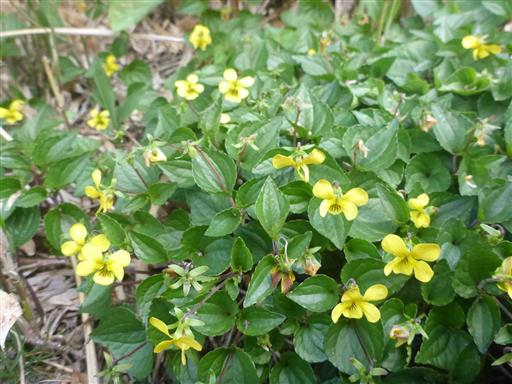
笹原が広がる気持ちの良い道が続く。
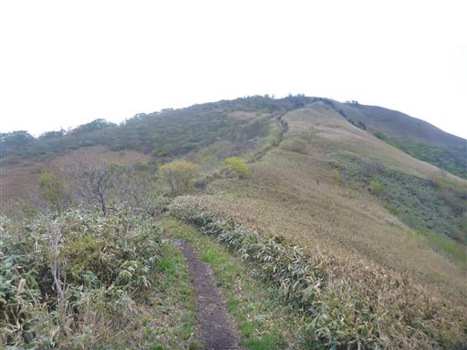
左手に日本海が見えてくる。空と海の境界はぼやけている。
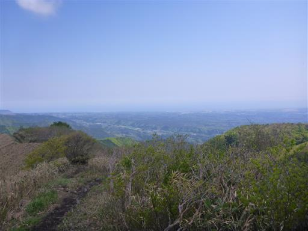
山頂が見えてきた。

中蒜山山頂に到着。立派な山頂標識で、上蒜山より扱いが良い。
蒜山の最高峰は上蒜山だ。
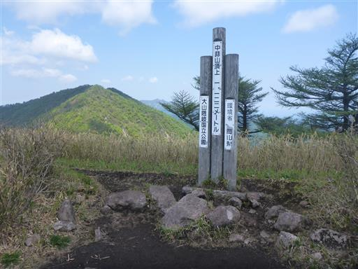
こちらの山頂は展望が良いからか、多くの登山者が休憩している。
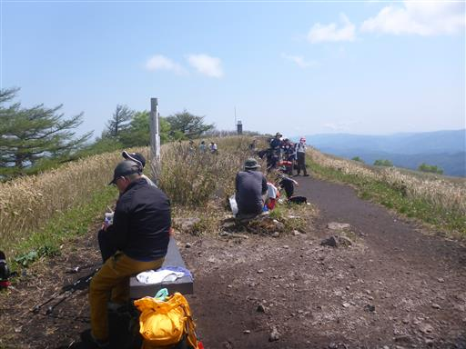
山頂からの展望。平地と、その背後に低い山々が続く。
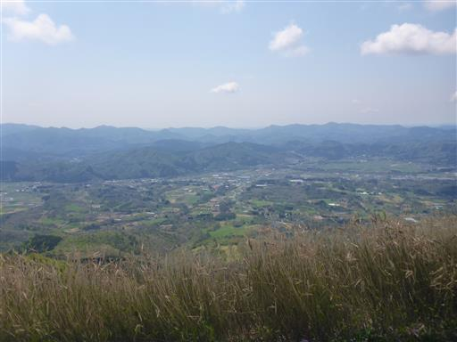
伯耆大山はちょうど上蒜山に隠されて見えない。
見えているのは、伯耆大山の右手にある矢筈ヶ山の辺りだろう。
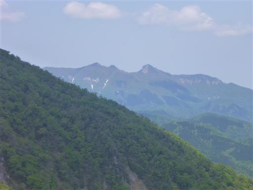
山頂にある避難小屋を覗いてみる。かなり古そうだ。
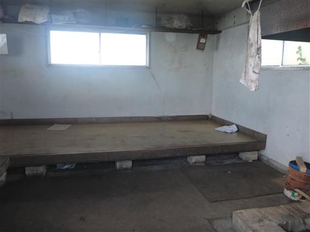
上蒜山、中蒜山、下蒜山の方向を指し示す標識。
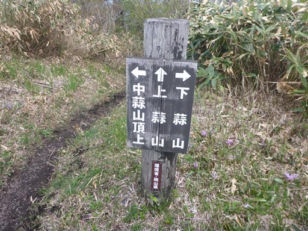
これから下蒜山に向かう。下蒜山との間は深く切れ込んでいて下った後の登りが大変そうだ。
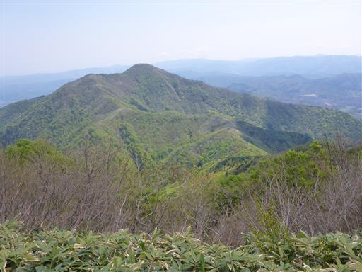
鞍部のフングリ乢まで300m下る。
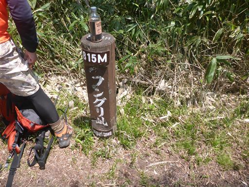
周囲の緑が美しい。


足元に咲くイカリソウ。この花を見かけるのは久しぶりだ。
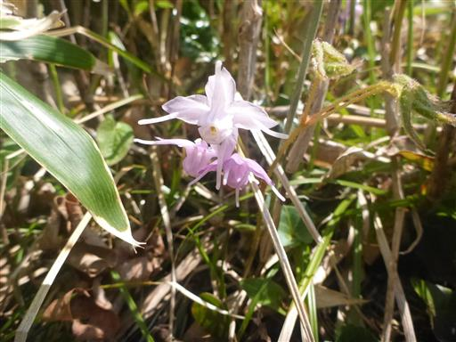
歩いていて気持ちの良い道がずっと続く。蒜山三山縦走はなかなかの名コースだ。
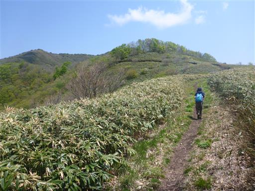
白いイワカガミを発見。
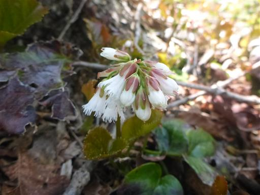
どこまで歩いても新緑が美しい。
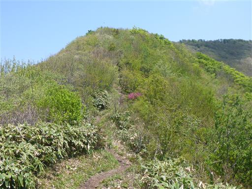
新緑の中に赤く輝くツツジがアクセントだ。
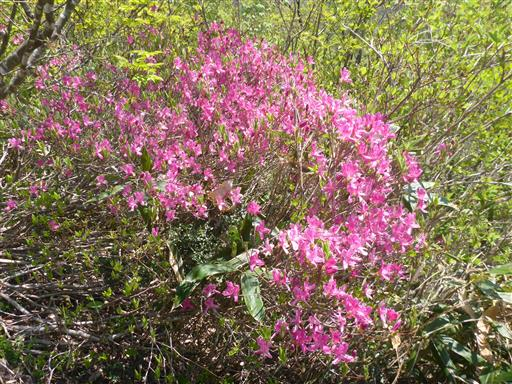
下蒜山に近づくと、伯耆大山の姿が見えてくる。
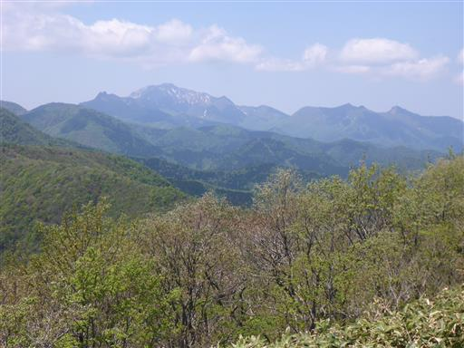
山頂まであと少し。
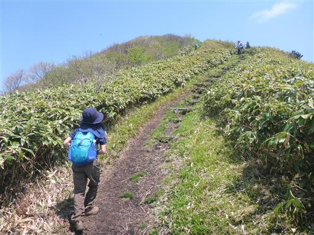
下蒜山山頂に到着。
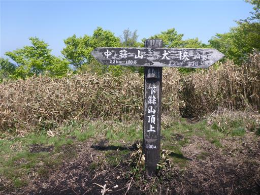
下蒜山の山頂も賑わっている。最高峰の上蒜山が一番ひと気が無かった。
みな三山縦走なのか、それとも個別に登っているのだろうか？
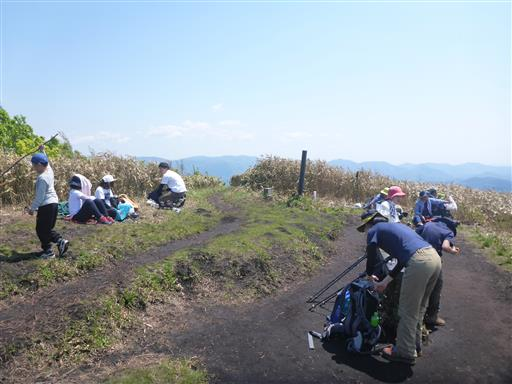
山頂からの展望。上蒜山と伯耆大山。

下山地点にタクシーを予約し、下山を開始する。
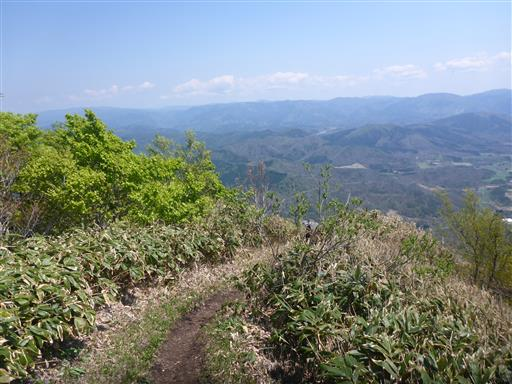
この丸い尾根を下っていく。
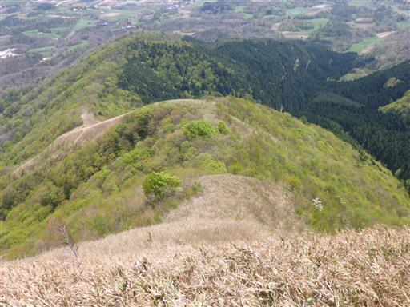
尾根の右半分が禿げているが、なぜだろう？
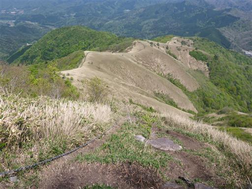
下蒜山からの下山道も案外急降下。
急斜面を下り終えると、とっても気持ちの良い道になる。
ゆったりとした斜面。
雲居平に到着。この辺りでちょうど半分。
山頂から1時間後にタクシーを予約したが、ちょっと時間が押し気味だ。
雲居平から歩いてきた尾根を振り返る。
雲居平を過ぎると、最後は樹林帯の中の道になる。
タクシー到着直前に無事、犬挟峠に下山する。標高510m。
タクシーで駐車場まで移動したら、キャンプ場に戻る道中にあった快湯館に立ち寄る。
その後はスーパーみかもで買い物。
キャンプ場に戻ってくる。凄まじい大混雑だ。
タクシーからカヌー体験の予約の電話をかけたのだが、予約がいっぱいで断られてしまった。
残念ながら眺めるのみだ。
大山池から望める山が初めて蒜山三山と気付く。
決して標高は高くない小さな山なのだが、歩いていて気持ちの良い山だった。
夜になってもキャンプ場は賑やかだ。

4日目
本日は撤収日。少し観光してから帰りたかったが、昨夜の関東の高速の渋滞がひどく
本日も渋滞しそうなので、撤収したらまっすぐ帰ることにする。
短い日程の割に移動時間が長く、晴天を求めて鳥取まで来たのに1日は天候が悪く、
かなり消化不良の旅行になってしまった。